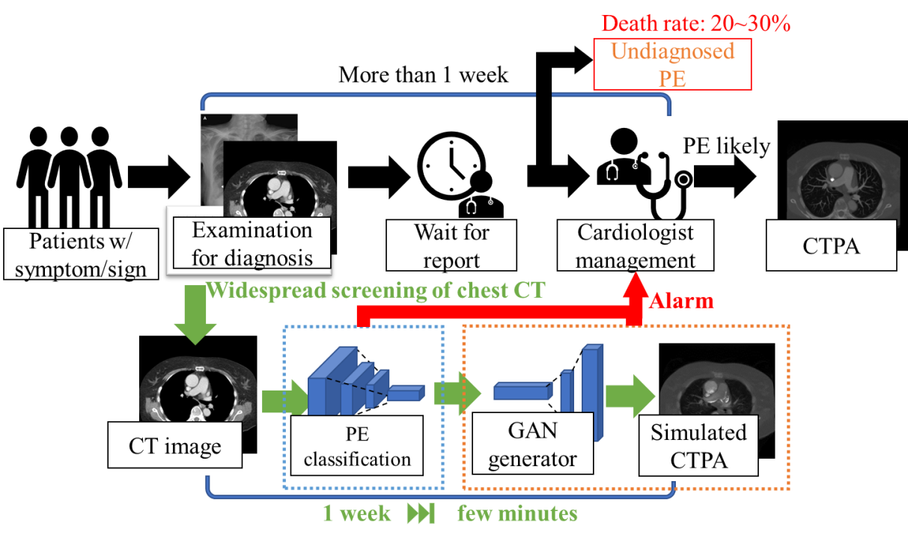
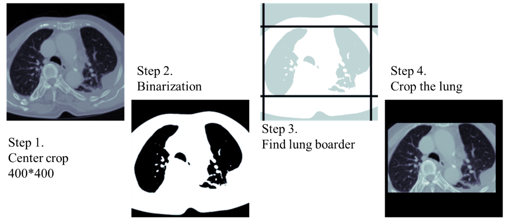
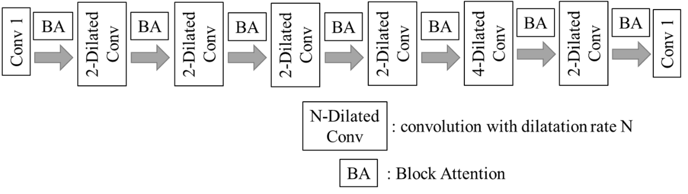
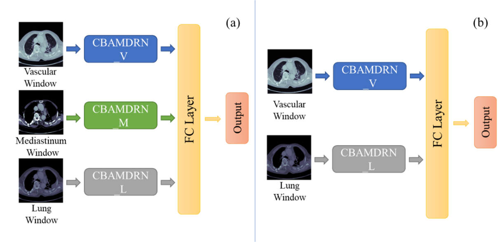
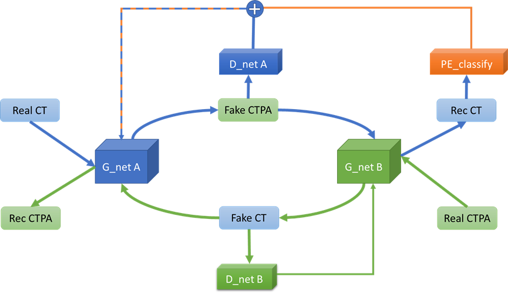
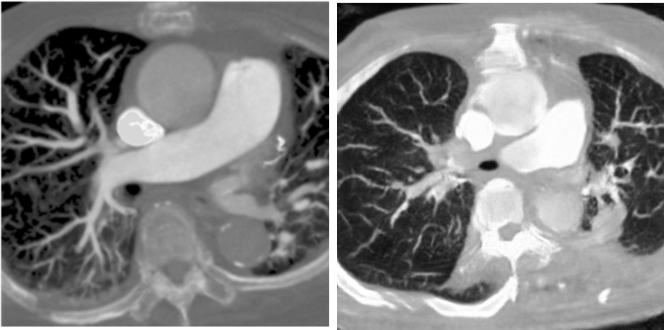
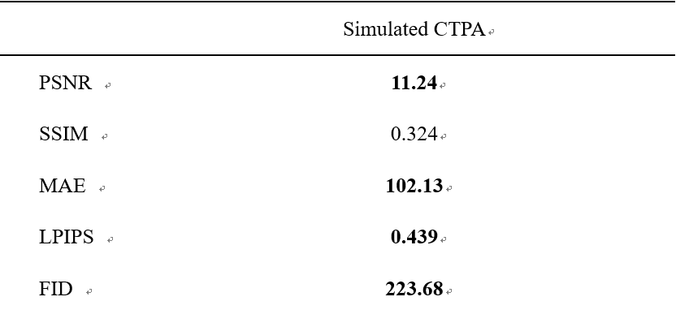

肺栓塞預警系統
Early Detection of Pulmonary Embolism from CT Image
摘要
本研究目的為利用深度學習透過一般的電腦斷層攝影(CT)影像建立一套適合臨床使用的肺栓塞預警系統。在現今對於肺栓塞(PE)病人的電腦檢測方法中，均需使用到電腦斷層肺血管攝影(CTPA)影像作為判斷及辨識病徵的資料，再利用深度學習的方法對於CTPA影像中的病灶區域做語意分割。因此本系統希望能透過CT影像提前發現並預警可能的PE病患。

本系統將分為兩個階段，第一個階段(藍框處)為CT影像的分類，本階段將利用卷積神經網路對於胸腔的電腦斷層攝影影像進行分類，挑選出含有疾病的截面並再從中挑選出可能為PE的影像，希望透過我們設計的網路大幅的提升隱藏之PE病患的被發現機率，並減少PE病患等待檢查的時間，增加醫院影像科影像處理效率。透過這個分類模型，我們希望可以在醫院大量的檢查影像中，優先警示可能含有疾病的病患資料，使得這些影像被優先判讀及處理。第二階段(橘框處)為透過深度學習模型模擬CTPA影像，用於PE病人病徵的識別，提供醫生除了第一階段之分類網路的結果外另一個判斷PE病患的參考依據。
在CT影像分類上，首先我們提出了肺部空間動態擷取的方法，快速的針對不同病患的肺部空間進行精準的擷取。

其次在模型設計上，由於在臨床應用的場景中，我們希望能精準地剔除WNL截面以達到減少影像學檢查的負擔及提升醫院診療的效率。我們採用兩階段的分類模型以提升不同階段的精準度。

我們使用空洞卷積及注意力機制，搭配多重醫療數位影像傳輸協定(DICOM)格式影像窗值輸入，加強深度學習網路對於肺栓塞的辨識能力，使得臨床上不須再進行CTPA攝影即可進行PE的辨識。

我們最終在分類任務上達到99.4%的分類精準度，並於PE及非PE的疾病中，分別達到了100%及99.2%的分類靈敏度，甚至在測試集中僅有一張CT截面的分類錯誤。
段之模擬CTPA影像生成系統則使用生成對抗網路，在CT影像中強化肺部血管之特徵，加強影像的參考價值，提供醫院判斷PE病患的依據。於實驗中我們選用了不需要配對影像的CycleGAN作為我們網路的骨幹架構，發現生成影像的結果已經有一定程度的相近於目標的CTPA影像，但是在肺栓塞的特徵上，並未產生的足夠明顯，因此我們在原始的CycleGAN中加入了一個監督式的神經網路，針對重建之CT影像進行判讀，查看其是否為肺栓塞之影像，並將此網路對於這張影像判讀為肺栓塞的信心指數作為一個新的損失函數回傳予生成器。透過這個方法，我們的生成對抗式網路能生成更接近有肺栓塞特徵的模擬CTPA影像。

由於本實驗目的為生成轉換不同類型之醫學影像，並未有相關之研究，因此本實驗將設計一套方法來評估我們的模型生成的結果。我們的希望模型輸出的影像與原始的CTPA影像越接近越好，因此我們要觀察的目標有以下幾點: 影像生成品質、結構相似度、影像相似度。以下為生成之結果及評估參數之結果。


本研究期望能對於肺栓塞臨床診斷方式提出一個新的方案，在繁複的篩檢流程中，透過深度學習網路的輔助，並檢視生成的模擬CTPA影像，使得醫生能評估病患是否需要進行CTPA的詳細檢測，提升檢測肺栓塞的速度及大幅減少未檢出的病患。
關鍵詞：深度學習、肺栓塞、捲積神經網路、語義分割